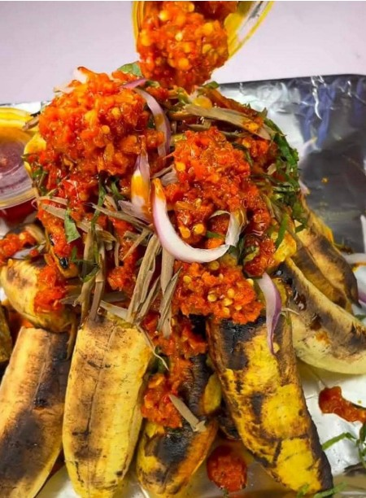

Boli (Roasted Plantain) and Ata Dindin
Boli (Roasted Plantain) is a popular Nigerian street-food “dessert” or snack, known for its smoky aroma and naturally sweet flavor. Ripe plantains are roasted over open flames or charcoal until the outside is charred and caramelized, while the inside turns soft and tender. It’s simple, comforting, and widely loved for how the natural sugars deepen during roasting.
Ata Dindin is a spicy, pepper-forward sauce that’s often paired with boli. It’s made from a rich blend of tomatoes, peppers, onions, and seasonings fried in oil until the flavors become concentrated and slightly smoky. Some versions include fried meats, fish, or assorted proteins, but at its core it’s a vibrant, hot, and flavorful stew.
Together, Boli and Ata Dindin create a sweet-and-spicy combination: the caramelized plantain balancing the bold heat of the sauce. It’s a classic treat that shows how simple ingredients can deliver big, satisfying flavors.
How to Make It
BOLI (ROASTED PLANTAIN)
- Preheat your oven to 350°F (180°C).
- Wash and peel the plantains. Cut them into thick slices or leave them whole if you prefer.
- Mix the olive oil and salt in a bowl. You can add traditional Nigerian spices like suya spice for extra flavour.
- Brush the plantain slices or whole plantains generously with the oil mixture. Make sure they are coated evenly.
- Place the oiled plantains on a baking tray or ovenproof dish.
- Put the tray in the oven and bake for about 20-30 minutes, flipping the plantains halfway through. Keep an eye on them to ensure they don't burn.
- Your boli is ready when the plantains are golden brown and tender.
- Serve hot with spicy pepper sauce or groundnut (peanut) sauce.
- Enjoy your homemade Nigerian boli!
ATA DINDIN
- In a pot, add your washed and cut-up assorted meat, season with onions, curry, thyme, salt, and fresh pepper, and allow to steam for 10 minutes.
- Next in a blender, put in washed and cut-up onion, shombo (remove the seeds), fresh pepper (ata rodo), and a little water then blend till smooth.
- In the same oil, (you might need to reduce it) add chopped onion, locust beans (very important), blended pepper mix, salt, seasoning, and crayfish powder. stir and fry for 10 minutes.
- In another pot set on medium heat, pour in palm oil and vegetable oil, allow to heat, then fry the cooked meat till it is well fried, then take out the meat.
- Next in the steaming neat, add water to cover the meat and cook till soft.
- once the meat is well cooked, drain and set aside
- Add boiled eggs, and fried meat, stir to combine, then add water or meat stock then cook for 10 minutes
- And Obe Ata Dindin is Ready!!!
- serve with the boli already prepared, even protein.